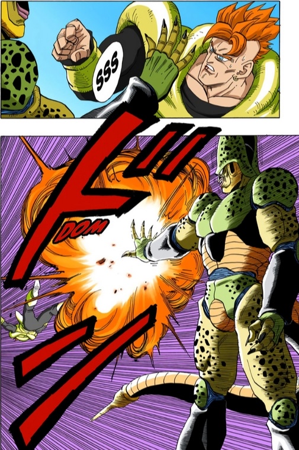
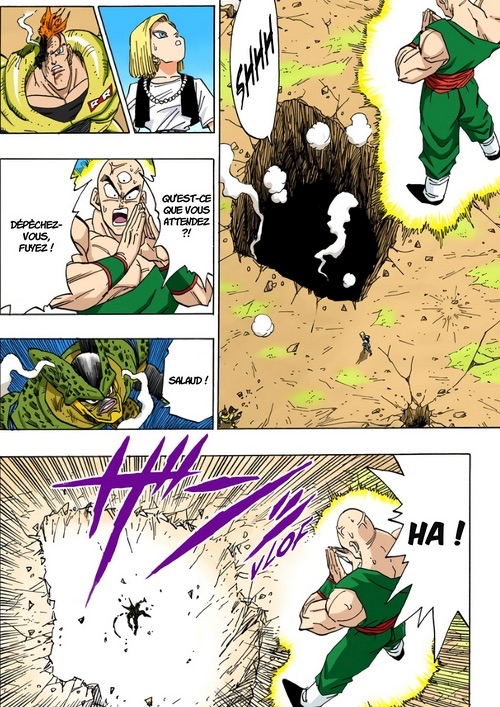
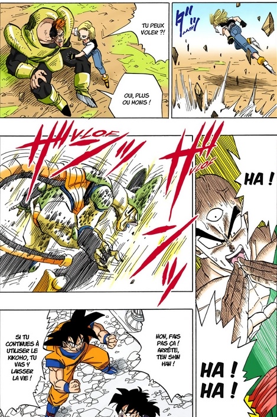
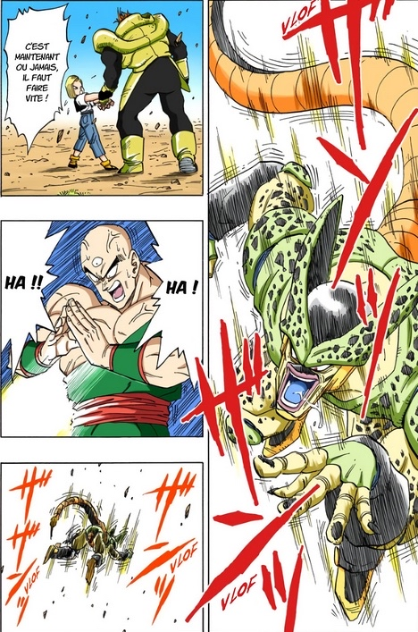
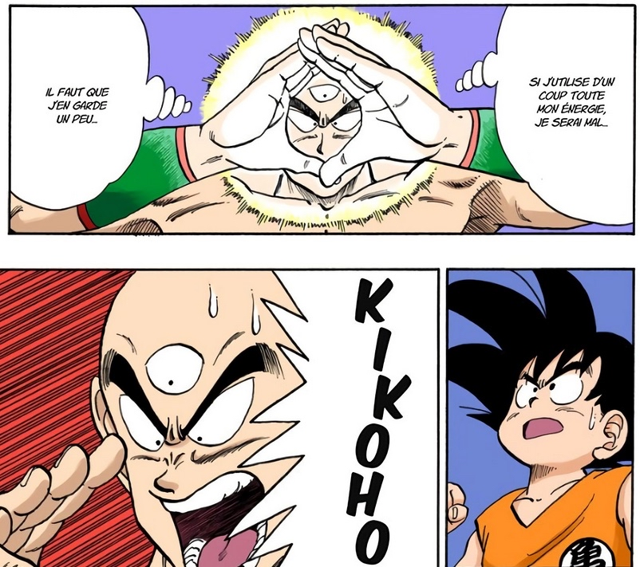
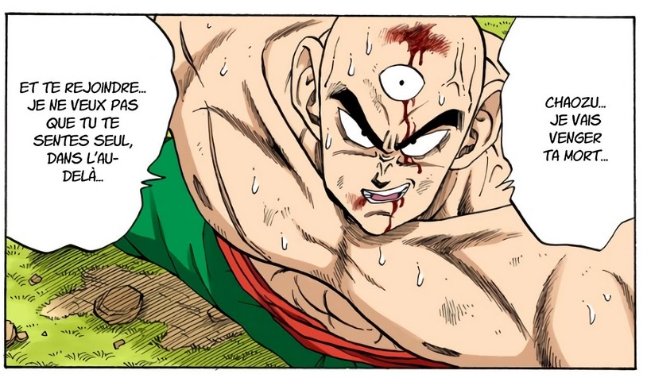
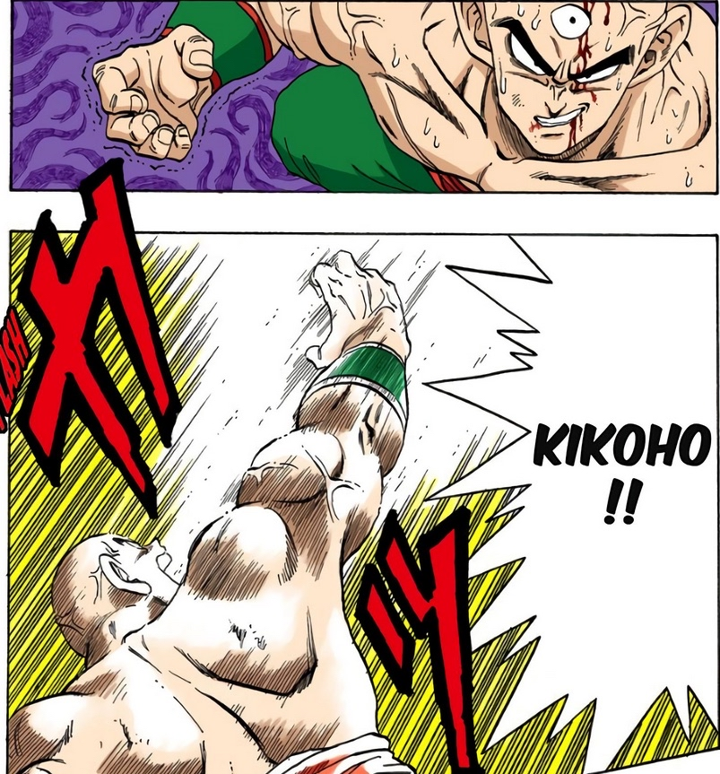

Sommaire de l’étude
Nous étions heureux de revoir notre cher Ten-chan jouer un rôle décisif. Face à Cell deuxième forme, Tenshinhan se dresse entre le monstre et les cyborgs. Il ne le vainc pas : il gagne du temps, au risque de sa propre vie. C’est un moment de bravoure mémorable.
Mais une scène peut être excellente sur le plan émotionnel et poser un véritable problème sur le plan de la cohérence narrative. C’est précisément cette distinction qui nous intéresse.
01. Boost magique ou nerf magique ?
Nous appelons ainsi un ajustement apparent et ponctuel des rapports de force, que les règles jusque-là établies par le récit ne semblent pas suffire à expliquer. Le terme « magique » désigne ici l’absence d’explication narrative satisfaisante, et non un mécanisme réellement magique dans l’univers.
Une performance inattendue
Un personnage semble soudain capable de faire ce que le récit ne nous avait pas préparés à le voir accomplir.
Une capacité qui disparaît
Son adversaire paraît ne plus pouvoir mobiliser les moyens d’action que nous lui connaissions.
Dans la scène du Shin Kikoho, il n’est pas nécessaire de déterminer si Tenshinhan a été boosté ou si Cell a été nerfé. C’est la relation entre les deux combattants qui pose question.
02. Avant de découvrir la scène
Pour comprendre ce que l’on reproche à une scène, il faut d’abord se replacer dans la position du lecteur qui ne l’a pas encore lue. Oublions un instant ce que nous savons de la suite. Qu’aurions-nous estimé possible au regard des rapports de force déjà établis ?
Le test de prédictibilité narrative ne consiste pas à exiger que le lecteur devine tous les événements. Un récit peut surprendre. Mais lorsqu’un événement paraît incompatible avec la grammaire que nous avons assimilée, il faut rechercher ce qui le rend possible dans le texte, plutôt que d’inventer une règle après coup.
03. N’oublions pas où se trouve notre cher Ten-chan
Tenshinhan s’est entraîné chez Kaio, puis pendant les trois années de préparation à l’arrivée des cyborgs. Il a progressé ; le manga ne chiffre toutefois pas son niveau à ce moment. Lui attribuer, par exemple, le niveau de Goku lors de son combat contre Vegeta sur Terre reste une estimation, non une donnée canonique.
Nous possédons un repère plus concret : sa confrontation avec C-17. L’extrait fourni montre C-17 prendre l’ascendant sur Tenshinhan et le saisir sans difficulté apparente. On n’a pas besoin d’imaginer une valeur de puissance pour comprendre le déséquilibre.

C-17 frappe puis saisit Tenshinhan ; le rapport de force est visible dans les cases.
À partir de là, Toriyama nous fait franchir plusieurs paliers. Les Super Saiyans sont dépassés par les cyborgs. Piccolo assimile le Tout-Puissant et peut rivaliser avec C-17. Cell, après ses absorptions d’humains, surclasse Piccolo et C-17. C-16 intervient alors à un niveau comparable à celui de ce Cell renforcé. Enfin, l’absorption de C-17 permet à Cell de franchir un nouveau palier.
Retenons surtout l’essentiel : il n’existe pas un simple petit écart entre C-17 et Cell deuxième forme. Le récit insiste au contraire sur une succession de dépassements.
04. C-16, le témoin gênant
Lorsque Cell évolue, C-16 tente d’intervenir. Son attaque ne lui permet pas de maîtriser son adversaire. Le rapport de force vient de changer. Or, peu après, Tenshinhan parvient à empêcher Cell d’avancer en enchaînant ses Shin Kikoho.
C-16
Un combattant qui rivalisait avec Cell première forme échoue face à sa nouvelle forme.
Tenshinhan
Un combattant dominé par C-17 parvient à repousser Cell deuxième forme à répétition.
Une attaque physique et une projection d’énergie ne sont certes pas identiques. C’est justement pourquoi il faut examiner si le Shin Kikoho possède une propriété établie permettant d’expliquer cet écart de résultat.
Le point de comparaison : C-16

Le coup atteint le visage de Cell, qui ne semble pas sérieusement affecté.

Cell arrête le bras de C-16 puis le repousse violemment d’une main.
Ce contraste est essentiel : Cell encaisse le coup de C-16, puis le repousse. C’est le même adversaire que Tenshinhan va parvenir à contenir.
Et maintenant, regardons notre cher Ten-chan

Tenshinhan déclenche le Shin Kikoho contre Cell deuxième forme.

Ten enchaîne ses projections tandis que les cyborgs peuvent s’éloigner.

Cell subit les projections successives ; Goku et Gohan suivent la situation.

La répétition du Shin Kikoho empêche Cell de poursuivre immédiatement les cyborgs.

Les tirs se poursuivent et Goku réagit à la mise en danger de Tenshinhan.
Regardez la répétition du geste : Cell essaie de sortir du cratère, Ten recommence. Il ne s'agit pas de gagner le combat ni de blesser durablement Cell, mais de l'empêcher de poursuivre C-18. C'est cette efficacité de contention que nous cherchons à expliquer.
05. Une technique spéciale, mais spéciale en quoi ?
Dans Dragon Ball, le Kikoho est présenté comme une technique particulièrement dangereuse pour celui qui l’utilise. Son coût et sa puissance destructrice ne sont pas en cause. Ce que nous interrogeons, c’est le mécanisme précis qui lui permettrait d’ignorer un écart de puissance aussi considérable.
Revenons à la présentation originale du Kikoho

Kamé Sennin décrit une puissance destructrice supérieure au Kamehameha et un coût énergétique susceptible de tuer ou de raccourcir la vie de l’utilisateur.

Ten réfléchit à la quantité d’énergie à conserver avant de lancer le Kikoho : il peut donc en moduler l’effort.
Kamé Sennin nous renseigne sur deux points : la puissance destructrice exceptionnelle de la technique et son coût pour l'utilisateur. Tenshinhan, lui, envisage de ne pas dépenser toute son énergie. Autrement dit, le coût est considérable, mais la proportion mobilisée n’est pas nécessairement toujours de 100 %. Aucun ratio n’est donné dans ces cases.
Une expérience antérieure : le Kikoho contre Nappa

Tenshinhan, déjà grièvement blessé, veut venger Chaozu.

Tenshinhan projette son attaque de la dernière chance avec son bras restant.

Nappa survit ; Ten s’effondre. Vegeta commente qu’il a dépensé toute son énergie.
Cette fois, Ten risque sa vie et échoue. Vegeta constate qu'il a dépensé toute son énergie. Nappa survit à l'attaque. Voilà un précédent particulièrement intéressant : une technique coûteuse, exécutée dans un effort désespéré, dont le résultat ne gomme pas l'écart de puissance. Il ne s'agit pas encore du Shin Kikoho : la comparaison invite précisément à demander ce qui a changé.
Les personnages de Dragon Ball sont, pour reprendre une image, de véritables réacteurs nucléaires. Leur ki leur permet d’attaquer, de repousser, de se protéger et de libérer de l’énergie autour d’eux. Il ne suffit donc pas toujours de bloquer leurs membres pour neutraliser leurs moyens d’action.
Une technique peut évidemment posséder des propriétés particulières. Dans un autre système de combat, la puissance brute ne permettrait pas nécessairement de résister à une capacité qui obéit à ses propres règles. Mais ici, il faut établir cette propriété : le fait que le Shin Kikoho soit éprouvant ne démontre pas à lui seul qu’il multiplie le ki à la manière du Kaioken, ni qu’il neutralise indépendamment du niveau de son utilisateur.
06. Le paradoxe des 100 %
« Oui, mais le Kikoho, c’est différent : Tenshinhan y met beaucoup plus de son ki que les autres dans leurs attaques. » Très bien. Acceptons un instant cette explication. Qu’implique-t-elle ?
Il ne s’agit pas de nier la puissance destructrice du Kikoho, ni le danger qu’il représente pour son utilisateur. Il s’agit de comprendre si la proportion de ki mobilisée, à elle seule, suffit à rendre compte de cette prestation.
Et les autres, ils mettent combien ?
Pour simplifier, donnons à Ten-chan une puissance de 100 unités. Imaginons que Vegeta soit quinze fois plus puissant. Aucun de ces chiffres n'est une mesure du manga.
Tenshinhan mobilise 100 % de sa puissance dans le Shin Kikoho. Supposons que seule la proportion de puissance mobilisée fasse la différence, sans multiplicateur propre à la technique.
Choisissez une réponse avant d'afficher la comparaison. Pensez aux scènes où les combattants engagent toute leur énergie pour tenter de l'emporter.
Les deux barres ci-dessous représentent des unités fictives sur une même échelle, et non les pourcentages propres à chaque personnage.
Que signifie un Kamehameha présenté comme une attaque de la dernière chance ? Comment interpréter les efforts désespérés de C-16 face à Cell deuxième forme ? Si les combattants beaucoup plus puissants mobilisaient seulement une infime partie de leur potentiel, il faudrait expliquer pourquoi le récit les présente pourtant comme donnant tout.
La question est moins de fixer un pourcentage que de vérifier si l'explication résiste à sa généralisation.
Limites : on suppose ici que l'énergie mobilisée est proportionnelle à la puissance disponible et que les attaques sont comparables à cet égard. L'énergie projetée, sa concentration, son mode d'action et ses dégâts ne sont pas nécessairement équivalents. Ce calcul ne prouve donc pas à lui seul une incohérence ; il teste la suffisance de l'explication par les seuls pourcentages. Le seuil de 5 % est obtenu avec un écart hypothétique de ×20, pas avec ×15.
Voilà tout le paradoxe. Si l'on affirme que Tenshinhan parvient à repousser Cell parce qu'il mobilise une proportion plus importante de son ki, il faut se demander quelle proportion mobilisent les autres combattants. Peut-on défendre la nouvelle explication sans remettre en cause notre lecture des autres combats ?
Si, au contraire, on attribue au Shin Kikoho un mécanisme particulier, une concentration ou une capacité de contention qui change le rapport entre puissance et résultat, c'est cette propriété qu'il faut établir. Le coût exceptionnel d'une technique ne démontre pas à lui seul un multiplicateur comparable au Kaioken.
Pour aller plus loin : les quatre schémas d'analyse
Échelle de puissance, piste du Kienzan, chaîne de déduction et réduction à l'absurde. Les valeurs et les conséquences chiffrées sont des hypothèses illustratives. Les autres scènes doivent être examinées séparément.
Ouvrir l’infographie complète en plein écran ↗07. Toriyama coupe la poire en deux
Voici mon hypothèse : Toriyama voulait remettre Tenshinhan en lumière tout en préservant la supériorité de Cell. Il lui offre donc une intervention décisive sans que Cell subisse de dégâts significatifs. Le combattant est héroïque, l’antagoniste reste invaincu.
Ce compromis émotionnel est parfaitement compréhensible. Mais suffit-il à résoudre le problème des rapports de force ? Dans la grammaire de Dragon Ball, une projection de ki capable de contenir un adversaire largement supérieur devrait, selon cette lecture, avoir une efficacité comparable à celle d’autres attaques puissantes. La scène paraît dissocier la capacité de le repousser et celle de lui infliger des dégâts sans en établir clairement le mécanisme.
Il ne s’agit pas de prétendre connaître une loi universelle suivant laquelle repousser signifie nécessairement blesser. Il s’agit de demander ce qui, dans cette situation précise, permet à Tenshinhan de produire une contention qu’on n’attendrait pas de lui. La distinction entre recul, dégâts et puissance mérite d’être examinée dans les cases elles-mêmes.
Le compromis demeure une hypothèse sur la construction narrative, et non une déclaration attestée de Toriyama.
08. Quand la scène choque intuitivement
Un joueur, en découvrant cette scène dans les cinématiques d'un jeu Dragon Ball Z, réagit immédiatement : il y voit une incohérence. Cette réaction, rapportée ici par l'auteur, est intéressante précisément parce qu'elle n'est pas le fruit d'une longue démonstration.
Pourquoi une scène peut-elle nous surprendre à ce point ? Parce qu'au fil des combats, nous avons assimilé une certaine grammaire des rapports de force. Le lecteur ou le spectateur peut donc percevoir un décalage avant même de savoir le formuler.
Ce ressenti constitue un signal, pas une preuve. Peut-être une information nous a-t-elle échappé ; peut-être la mise en scène révèle-t-elle une tension dans le système narratif. C'est à la lecture du manga de départager ces possibilités. Inutile d'opposer les fans qui aiment cette scène à ceux qui s'interrogent sur elle : on peut très bien apprécier le courage de Tenshinhan et questionner la cohérence de son exploit.
09. Une scène que nous aurions voulu pouvoir défendre
Nous aimons l’exploit de Tenshinhan. Nous aurions simplement aimé que Dragon Ball nous donne les moyens de comprendre pourquoi il peut l’accomplir.
Le problème n’est pas de faire briller un ancien rival de Goku. C’est de le faire briller au moyen d’une performance qui paraît contredire la grammaire de puissance que le récit vient de construire.
On peut aimer une scène sans être obligé de lui inventer une cohérence.
Les autres études du dossier
La sieste magique de Vegeta — Comment expliquer sa performance contre Freezer au regard du niveau auquel nous l’avions laissé ?
Mister Buu face à Kid Buu — Confronter sa prestation à celle contre Buu gris, dans la lecture des rapports de force défendue sur le site.
C-16 retient Cell parfait — Un autre cas de contention physique, à distinguer de l’échec face à Cell deuxième forme. Les deux scènes devront être confrontées à partir des planches exactes.
Études à venir. Les exemples ne sont pas encore des conclusions démontrées.
Source principale : Dragon Ball, Akira Toriyama / Shueisha, manga original. Cet article reprend une discussion Discord et treize captures fournies par l’auteur ; les références exactes d’édition et de pagination restent à compléter. Les chiffres du simulateur sont fictifs.